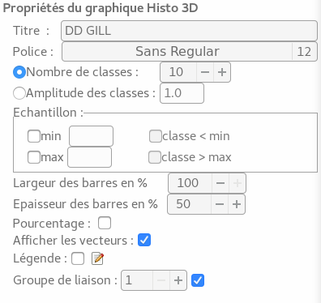

Configurer un graphique Histo3D

Titre :
Titre qui apparaît en haut du graphique.
Noter la possibilité d'utiliser des macros dans le titre du graphique (voir info-bulle).
Police : Police du titre : une interface permet de configurer la police (fonte, taille).
Nombre de classes : Nombre de classes de l'échantillon : lorque ce nombre est positionné, le choix de l'amplitude des classes n'est plus disponible.
Amplitude des classes : Taille des classes de l'échantillon : lorque ce nombre est positionné, le choix du nombre de classes n'est plus disponible.
Echantillon : Vista offre la possibilité de seuiller l'échantillon de données en précisant la valeur minimale et la valeur maximale. On peut également demander de créer une classe contenant les valeurs qui sortent de l'échantillon (classe<min et/ou classe>max).
Largeur des barres : Largeur des barres donnée en pourcentage de la largeur maximale.
Epaisseur des barres : Epaisseur des barres donnée en pourcentage de la largeur maximale.
Pourcentage : Bascule l'affichage du nombre de valeurs par classe en pourcentage (axe des ordonnées).
Afficher les vecteurs :
Affiche le nom des vecteurs aida visualisés verticalement à droite du graphique.
Affiche également au dessus de l'histogramme le nombre de valeurs de l'échantillon réellement utilisé (sans les valeurs manquantes) ainsi que le pourcentage de valeurs manquantes de l'échantillon.
Légende : Controle l'affichage de la légende sur le graphique (taille, position, contenu, cf § Configurer la légende).
Groupe de liaison : Permet d'associer le graphique à un groupe de liaison : tous les graphiques appartenant à un même groupe de liaison voient leurs données contraintes les unes par rapport aux autres i.e. une donnée est prise en compte si et seulement si elle existe dans toutes les données de tous les graphiques du groupe.
Attention : l'orientation du graphique histo3D se fait à la souris. On peut orienter le graphique selon les 3 axes de rotation.